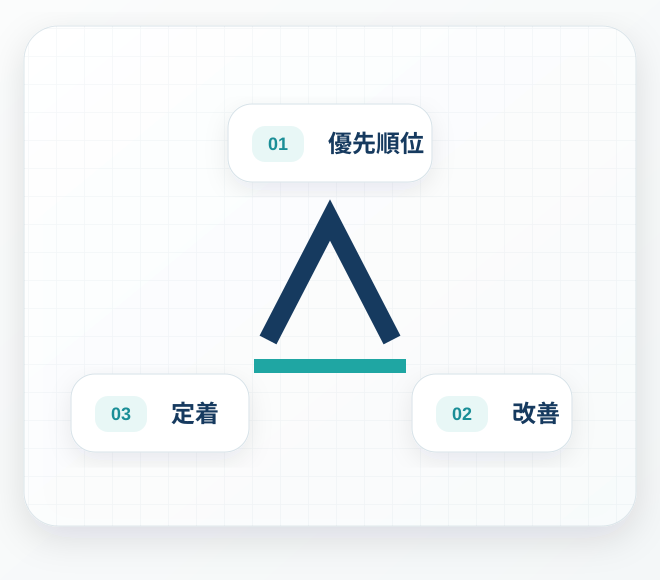

優先順位
ヒアリングと診断内容をもとに課題を整理し、改善対象、目標、確認方法を決めます。
Service
診断で現在地を整理し、優先順位、改善、定着の3段階で支援します。
What We Do
同じ飲食店でも、人数、営業時間、役割、設備、教育方法は異なります。AKELBAは一般論から始めず、現場の実態を整理したうえで、優先順位を決めます。
Package
診断で見つかった改善候補から優先順位を決め、改善を実行し、現場で続く形へ整えます。

ヒアリングと診断内容をもとに課題を整理し、改善対象、目標、確認方法を決めます。
現状の流れ、役割、確認方法を整理し、小さく試しながら負担と成果を確認して調整します。
手順、役割、教育方法を整え、継続状況を振り返り、次の改善候補をまとめます。
Support Areas
店舗の状況に合わせ、取り組む範囲を絞ります。
重複、確認、手戻り、待ち時間など、負担が積み重なる部分を見直します。
店長や特定スタッフだけが知っている判断・手順を整理します。
教える内容、順番、確認基準を整え、教育する人の負担を軽減します。
誰が何をいつ確認するかを整理し、伝達漏れや認識差を減らします。
複雑なルールを増やさず、営業中でも守れる簡潔な仕組みに整えます。
一度の変更で終わらず、店舗自身で見直せる確認方法をつくります。
Deliverables
提案だけで終わらず、改善後も現場で使える形に整えます。
何を、なぜ、どの順番で変えるかを整理します。
現場で迷いにくい手順と役割をまとめます。
改善が続いているかを店舗自身で確認できる形にします。
Before Consulting
課題がはっきりしていない段階でも大丈夫です。現状を確認し、改善候補と優先順位を整理します。